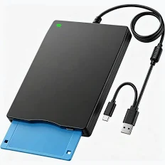
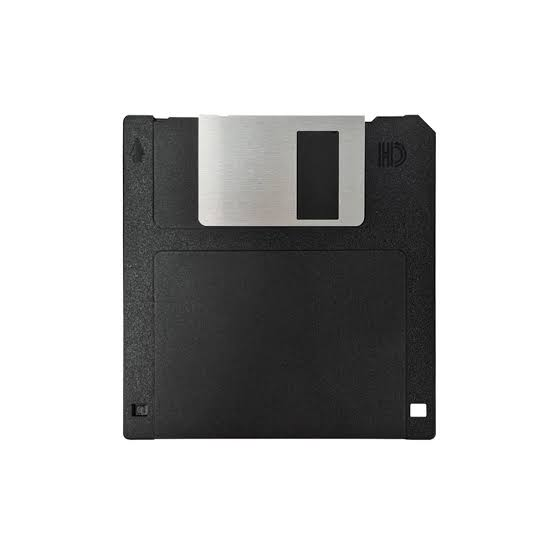
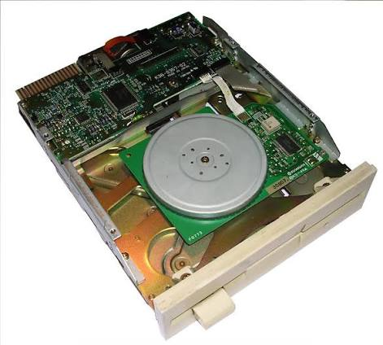
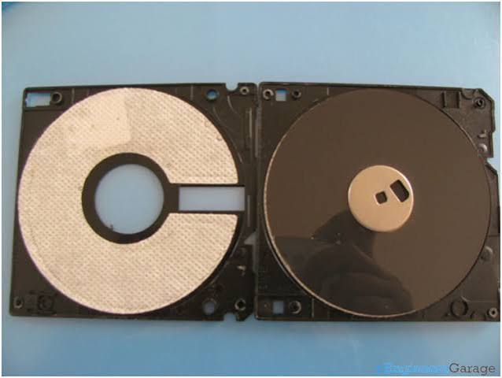

Napęd elastyczny (Floppy Disk Drive – FDD), nazywany również stacją dyskietek, to urządzenie pamięci masowej służące do odczytu i zapisu danych na dyskietkach.
Przez wiele lat był jednym z najpopularniejszych sposobów przenoszenia plików między komputerami. Używano go do przechowywania dokumentów, programów, sterowników oraz kopii zapasowych.
Napęd FDD montowano najczęściej wewnątrz obudowy komputera i podłączano do płyty głównej za pomocą specjalnej taśmy.


Wewnątrz dyskietki znajduje się cienki, elastyczny krążek pokryty materiałem magnetycznym. Całość jest chroniona plastikową obudową, która zabezpiecza nośnik przed uszkodzeniami.
Podczas pracy dyskietka obraca się wewnątrz napędu. Głowica magnetyczna odczytuje zapisane informacje lub zapisuje nowe poprzez zmianę namagnesowania powierzchni krążka.
Dane są zapisywane na dyskietce w postaci ścieżek i sektorów, co pozwala napędowi odnaleźć konkretne informacje.


Były popularne w starszych komputerach. Miały miękką, elastyczną obudowę i występowały w różnych pojemnościach, najczęściej 360 KB lub 1,2 MB.
Były mniejsze i bardziej wytrzymałe dzięki twardej plastikowej obudowie oraz metalowej osłonie chroniącej powierzchnię magnetyczną. Najpopularniejsza wersja miała pojemność 1,44 MB.
Z biegiem lat dyskietki stały się przestarzałe ze względu na małą pojemność, wolny transfer danych i podatność na uszkodzenia.
Zostały zastąpione przez płyty CD i DVD, pendrive'y oraz nowoczesne dyski. Obecnie napędy FDD można spotkać głównie w starszych komputerach i urządzeniach przemysłowych.
Standardowa dyskietka 3,5 cala o pojemności 1,44 MB mogła pomieścić tylko niewielką część danych, które obecnie zajmuje pojedyncze zdjęcie wykonane nowoczesnym smartfonem.